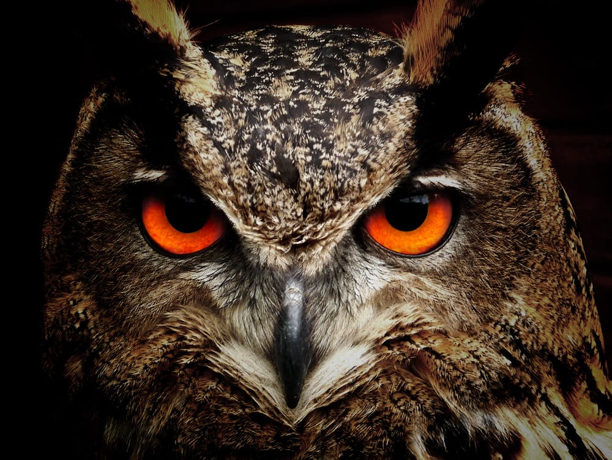

Welcome to Birds of the Night
Owls are birds with over 200 species. Owls tend to hunt mostly small mammals like mice. They may ocassionaly go for fish. Owls can rotate their heads and necks as much as 270 degrees. That is because Owls have 14 neck vertebrae.